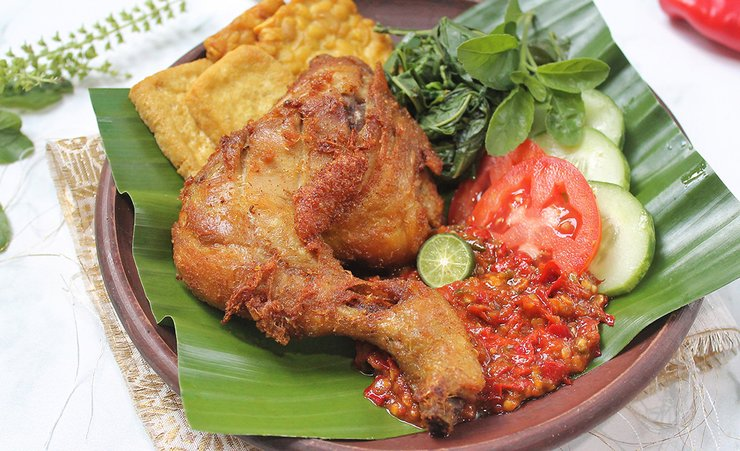

Indonesian Spicy Penyet Chicken recipe

This one is hot! Brace yourself!
Ayam Penyet (Penyet Chicken) is an incredibly spicy Indonesian dish that will make your tongue feel like burning
Ingredients
- 5 cloves garlic, peeled, divided
- 3 shallots, divided
- 1 1/2 inch piece fresh ginger root, peeled and chopped
- 1 1/2 inch piece galangal, thinly sliced
- ½ teaspoon ground coriander
- 2 teaspoons salt, divided
- 4 chicken thighs
- 1 1/4 cups water
- 2 salam leaves (substitute with curry leaves)
- 3 teaspoons oil, divided, or as needed
- 1/2 tomato
- 11 fresh red chile pepper, finely chopped
- 4 tablespoons key lime juice, or to taste
- 1 teaspoon shrimp paste
- 1/2 teaspoon white sugar
- 1 bunch lemon basil (kemangi)
Steps
- Combine garlic, 1 shallot, ginger, galangal, coriander, and 1 1/2 teaspoon salt in a mortar and pestle; pound into a paste.
- Combine chicken with the garlic paste, water, and salam leaves in a pot. Bring to a boil, reduce heat, and simmer until chicken is cooked through, about 20 minutes.
- Meanwhile, heat 2 teaspoons oil in a skillet. Once the chicken is fully boiled, fry the chicken in the skillet until it's golden brown, 5 to 10 minutes.
- For the sambal (chili sauce) heat 1 teaspoon oil in a skillet over medium heat and cook remaining 2 shallots, tomato, and red chiles for 2 minutes. Move to a mortar and pestle and add lime juice, shrimp paste, 1/2 teaspoon salt, sugar, and lemon basil. Pound everything into a paste.
- Place the sambal (chile sauce) at the bottom of a serving plate and place the chicken on top of the dish.
Back to home